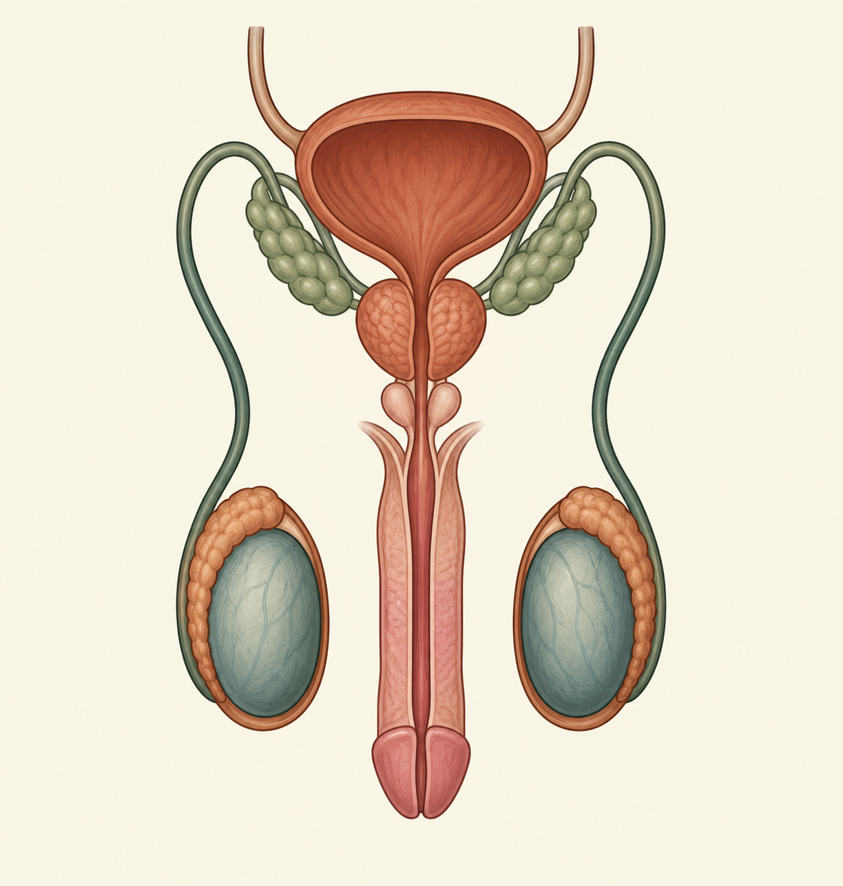

Testículos
São as gônadas masculinas. Produzem espermatozoides e secretam testosterona, hormônio envolvido no desenvolvimento de características sexuais e na função reprodutiva.
Órgãos especializados na produção, maturação e transporte dos espermatozoides, além da produção de hormônios como a testosterona.

O sistema reprodutor masculino é formado por órgãos externos e internos. Cada estrutura tem um papel específico para a produção e a passagem dos gametas.
São as gônadas masculinas. Produzem espermatozoides e secretam testosterona, hormônio envolvido no desenvolvimento de características sexuais e na função reprodutiva.
Estruturas alongadas localizadas sobre os testículos. Nelas, os espermatozoides amadurecem e ficam armazenados temporariamente.
Conduzem os espermatozoides do epidídimo em direção aos ductos ejaculatórios durante a ejaculação.
Produzem um líquido rico em substâncias que fornecem energia aos espermatozoides e compõem grande parte do sêmen.
Produz secreção que se mistura aos demais componentes do sêmen e contribui para o ambiente em que os espermatozoides são transportados.
O pênis é um órgão externo. A uretra conduz a urina para fora do corpo e também participa da passagem do sêmen, em momentos diferentes.
Bolsa de pele que abriga os testículos e ajuda a regular sua temperatura, que deve ficar ligeiramente abaixo da temperatura corporal para a produção adequada de espermatozoides.
O sêmen não é formado apenas por espermatozoides: ele também contém secreções produzidas por glândulas do sistema reprodutor.